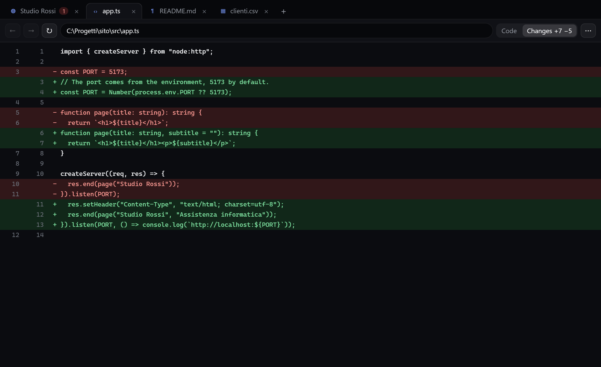
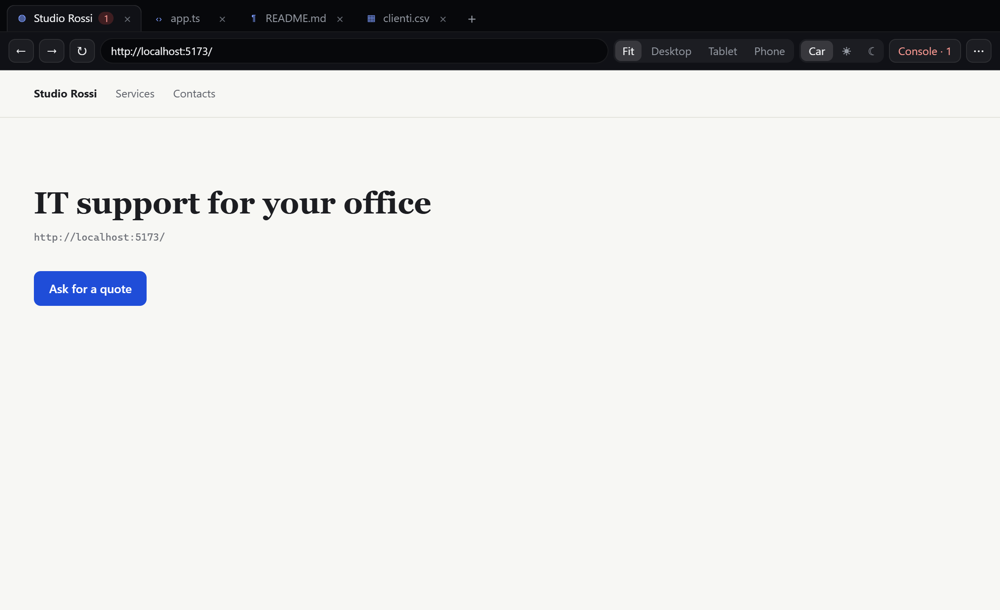

Preview
Files and web pages next to the chat, in a real browser: highlighted changes, phone sizes, console and tools for the chat.
The Preview is a window with tabs, like a small browser, next to the chat. It shows the files the chat works on and web pages: the site you are building on localhost, a page the chat has just made, a PDF, a CSV.

#How it opens
- A link in a chat message: it opens in the Preview. Ctrl+click sends it to the Windows browser instead.
- A file the chat mentions (for example
src/app.tsorC:\Projects\site\README.md): it is underlined with dots, a click opens it. Relative paths start from the chat's folder (Settings → Chat → Work folder). - By itself, with terminal mode: when the chat changes a file, the file shows up in the Preview with the changes highlighted, without stealing your window.
- The window button in the chat's header (with terminal mode on).
- A development server that just started: the card in the island has a Preview button. + in the Preview also lists the servers listening on this PC.
- Dropping a file on the window, or typing an address or a path in the bar.
In Settings → Chat → Preview you choose how to have it:
- In the island, on the right: a panel inside the open island, to the right of the chat. Drag the edge between chat and Preview to give more room to one or the other, without the island changing size (double click: starting width); it hides when the island closes and comes back when you reopen it. It is there only with the chat: switching to another tab of the island hides it. The ✕ at the top right closes it, and so does the chat's Preview button, which opens and closes it.
- Separate window: a normal window you move wherever you like, even to another screen.
- Off: links and files go back to the browser and their programs.
#Files
| Type | What you see |
|---|---|
| Code (ts, js, rs, py, cs, ps1, json…) | Numbered, coloured lines |
| Markdown | Laid-out Preview or Code |
| CSV | A table (first 1000 rows) or the text |
| HTML, SVG, PDF | In the browser, or the code |
| Images | The image; a click shows it at full size |
When the chat changed a file, Changes +7 −5 appears: removed lines in red, added ones in green, compared with the file before the chat touched it. The file is drawn again by itself when it changes, even when you edit it.
#Web pages
Pages are in a real browser (Edge's engine), not a picture.
- ← → ↻ and the address bar, as in a browser;
localhost:5173is enough, withouthttp://. - Panel, Desktop, Tablet, Phone: the page as wide as the Preview or at that device's size, with touch for the phone.
- Fit, 100%, Original: the page shrunk until it fits (with no device chosen, as on a PC), at normal size, or one page pixel for each screen pixel.
- Auto, ☀, ☾: the page in light or dark mode, to try both themes of your site.
- Console: the page's messages and errors; the red number on the tab says how many errors there are.
- ⋯: open in the browser or in the file's program, show in the folder, copy the address, Developer tools (Edge's).

#The chat uses the Preview
With EasyIsland's tools on, the chat can open a page or a file in the Preview, read its text, take a screenshot, read the console errors and try it at phone size or in dark mode. So after changing your site it checks by itself that it works before telling you.
The chat sees the page the way screen readers read it: headings, texts, buttons and fields, each with its own reference. So it clicks exactly the right element, even when two buttons have the same text, it can wait for a page to finish loading and it sees the failed network requests. When the Preview is open, the chat knows by itself what is in it: you do not need to tell it.
It can also click and type in a page's fields, but every time it asks Allow / Deny in the island. It never types passwords or payment details.
#Shortcuts
| Keys | What it does |
|---|---|
| Ctrl+L | Goes to the address bar |
| Ctrl+R or F5 | Reload |
| Ctrl+T | New tab |
| Ctrl+W | Closes the tab |
| Ctrl+Tab | Next tab |
| Alt+← / Alt+→ | Back / forward |
Once the window is closed nothing keeps running; the tabs come back the same the next time.